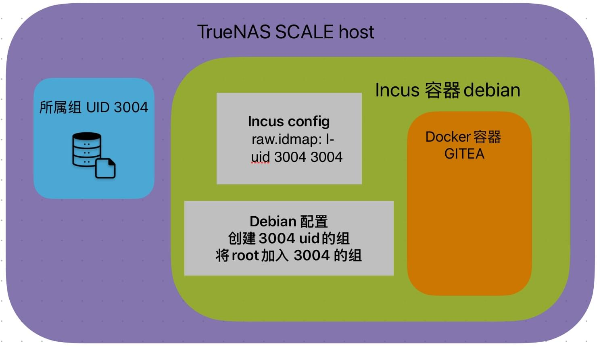
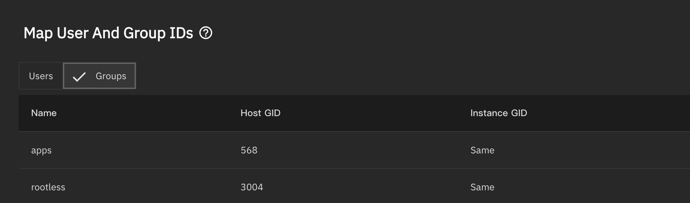

TrueNAS 25.04 + Docker最佳实践（文件权限篇）
介绍
TrueNAS SCALE 24.10从K8s的支持转到了更好的维护的Docker（中间价需要调用的东西太多了），基本上告别SCALE这个词（这也就是25.04已经不叫SCALE的原因）。
Docker本身对于应用的部署难度是大幅降度的，但是Docker难度的降低其实是有明显代价的，就是权限问题。
这片文章目的在于分析当前Docker镜像带来的各种问题
虽然实在TrueNAS 25.04运行，但是理论在任何系统都通用，都可以作为docker运行的一个
目的
- 安全第一
因为有对外服务，要保证容器即使被逃逸也不会得到host的root权限 - 挂载目录权限统一
所有的docker容器应用最后都属于一个UID或者GID，方便权限管理 - 性能
逃不开的话题，虽然有nfs over rdma能降低挂给其他虚拟机损耗，但是本身zfs对于nvme性能的损耗已经十分大，能通过直接挂载目录而非网络挂载，在CPU，磁盘等方面的消耗也能减少。同时在host管理目录也更加方便。
问题
Docker Daemon
首先众所周知的Docker Daemon（守护进程）永远是root运行。
默认进程和UID
Docker 默认的进程或者在容器内的能获得到的root权限就是宿主的root ，因为默认没有启用 user namespace remapping，所以如果容器逃逸了、或者被赋予了访问宿主资源的能力，它就能像宿主机 root 一样行动。
Docker出的解决方法
USER 选项：让容器内的进程直接都以指定UID运行，但是带来很大问题问题是，很多镜像会操作非挂载的系统目录，最简单的比如说/var/log/ 下创建log文件，都会因为非root无法创建，直接无法运行。
Env变量指定UID：这个就是更是阴间中的阴间。因为这个不是一个标准操作，每个镜像作者都有自己想法。
例子1
比如著名的linuxserver/的镜像，他特别贴心的让他们发布的每一个镜像都支持指定PUID和PGID，似乎这是一个能解决，但是你可以看到他们具体的实现方式。
在容器启动的是读取PUID env，非默认的情况下创建对应用户，然后对挂载目录执行lsiown
https://github.com/linuxserver/docker-baseimage-ubuntu/blob/212ab2133eb21e4e4b536039c790201baf81fd4f/root/etc/s6-overlay/s6-rc.d/init-adduser/run#L53
1
2
3
4
5
6
7
8
9
10
11
12
13
14
15
16
17
18
19
20
21
#...
#...
PUID=${PUID:-911}
PGID=${PGID:-911}
if [[ -z ${LSIO_READ_ONLY_FS} ]] && [[ -z ${LSIO_NON_ROOT_USER} ]]; then
USERHOME=$(grep abc /etc/passwd | cut -d ":" -f6)
usermod -d "/root" abc
groupmod -o -g "${PGID}" abc
usermod -o -u "${PUID}" abc
usermod -d "${USERHOME}" abc
fi
#...
#...
if [[ -z ${LSIO_READ_ONLY_FS} ]] && [[ -z ${LSIO_NON_ROOT_USER} ]]; then
lsiown abc:abc /app
lsiown abc:abc /config
lsiown abc:abc /defaults
filsiown好像也是他们自己制作的脚本本质就是chown一下。
https://github.com/linuxserver/docker-mods/blob/cac9e7450a0698f19d750b67db61c4aa214d5290/lsiown.v1#L30
1
/usr/bin/find "${PATH[@]}" "${MAXDEPTH[@]}" ! -xtype l \( ! -group "${GROUP}" -o ! -user "${USER}" \) -exec chown "${OPTIONS[@]}" "${USER}":"${GROUP}" {} + || printf "${ERROR}"- 只对Dockerfile里面定义的路径chown，对于媒体库这样挂载路径多样的情况，根本照顾不到
- 用root对挂载进来的“指定配置路径”进行了chown，更改了所有者直接破坏原来的权限。
- 只有应用进程本身是UID是指定的UID，容器内本身还保留root权限，那么这个容器本身还是存在root用户并且可以调用，只解决文件权限问题，而且是破坏性解决
- 不是啊，说到底你还是能拿root啊（
例子2
最近碰到一个更加奇怪（阴间）的镜像 —> Gitea ，他官方提供了2个镜像，一个是basic的一个是rootless
先来看下面的basic，支持USER_UID指定，那么基本来说应该是linuxserver的镜像差不多的方式。
1
2
3
4
5
6
7
8
9
10
11
12
13
services:
server:
image: docker.gitea.com/gitea:1.23.8
restart: always
environment:
- USER_UID=1000
- USER_GID=1000
volumes:
- ./data:/var/lib/gitea
- ./config:/etc/gitea
ports:
- "3000:3000"
- "2222:2222"容器内本身还有root权限，通过entrypoint运行脚本，替换passwd文件里面git用户的uid，其实也都属于常规操作。
https://github.com/go-gitea/gitea/blob/688da55f543f82265cc7df2bd1cf2bce53188b7a/docker/root/usr/bin/entrypoint#L22
1
2
3
4
5
6
7
8
9
if [ -n "${USER_GID}" ] && [ "${USER_GID}" != "`id -g ${USER}`" ]; then
sed -i -e "s/^${USER}:\([^:]*\):[0-9]*/${USER}:\1:${USER_GID}/" /etc/group
sed -i -e "s/^${USER}:\([^:]*\):\([0-9]*\):[0-9]*/${USER}:\1:\2:${USER_GID}/" /etc/passwd
fi
# Change UID for USER?
if [ -n "${USER_UID}" ] && [ "${USER_UID}" != "`id -u ${USER}`" ]; then
sed -i -e "s/^${USER}:\([^:]*\):[0-9]*:\([0-9]*\)/${USER}:\1:${USER_UID}:\2/" /etc/passwd
fi那么rootless镜像呢，我看了很兴奋，终于有人做纯正的rootless镜像了，官网的compose事例如下，当时觉得奇怪，都rootless怎么没指定UID，手动加上了basic镜像里面的USER_UID环境变量，发现根本跑不起来，当时在试podman，以为是podman哪里没配对。
1
2
3
4
5
6
7
8
9
10
11
12
13
14
version: "2"
services:
server:
image: docker.gitea.com/gitea:1.23.8-rootless
restart: always
volumes:
- ./data:/var/lib/gitea
- ./config:/etc/gitea
- /etc/timezone:/etc/timezone:ro
- /etc/localtime:/etc/localtime:ro
ports:
- "3000:3000"
- "2222:2222"然后好奇看了眼官方打包的Dockerfile。
https://github.com/go-gitea/gitea/blob/688da55f543f82265cc7df2bd1cf2bce53188b7a/Dockerfile.rootless#L77
1
2
3
4
5
6
# git:git
USER 1000:1000
ENV GITEA_WORK_DIR=/var/lib/gitea
ENV GITEA_CUSTOM=/var/lib/gitea/custom
ENV GITEA_TEMP=/tmp/gitea
ENV TMPDIR=/tmp/gitea谁TMD的rootless镜像指定1000 uid不能更改用的？最后自己拉过来改了dockerfile然后编译
例子3
除了上面那些好歹你能指定一下，有些镜像，你真的不知道他们是什么UID镜像。postgres这么一个常用镜像，默认uid是999，挂载目录进去因为权限限制的比较死，直接提示权限不够。
虽然postgres库下面提示，可以直接用user去指定uid运行，但是你需要去处理passwd文件。
[!NOTE]
As of docker-library/postgres#253, this image supports running as a (mostly) arbitrary user via--userondocker run. As of docker-library/postgres#1018, this is also the case for the Alpine variants.The main caveat to note is that
postgresdoesn’t care what UID it runs as (as long as the owner of/var/lib/postgresql/datamatches), butinitdbdoes care (and needs the user to exist in/etc/passwd):
挂载目录没法处理权限这个问题，在k8s或者大型项目中都会使用卷挂载或者pvc之类的块存来避免权限问题，但是在家里挂载目录还是更好维护操作文件，并且好做快照恢复。
- 总结下来就是，每个容器镜像的实现方式根据开发者的喜好五花八门，层次不齐。但是最终还是因为docker本身没有一个很好且规范的解决方法。
最佳实践
原理
简单来说，把Docker塞进另外的非特权的系统级容器（incus或者lxc）中，通过idmaps 映射host机器的一个组，让容器内要使用的所有用户加入这个容器内的这个组，也就会被自动映射到host的组。另外incus和lxc这类容器默认的root用户也会被映射到主机非常大uid（65534+）的非root用户来确保安全性。
https://linuxcontainers.org/incus/docs/main/userns-idmap/

那么，在incus容器中的debian，我们就可以随意运行docker容器即使这个应用是root
他获得挂载文件权限的映射路径是
UID:0(Docker) -> UID:0 (IncusDebian) -> GID:3004(IncusDebian) -> GID:3004(TrueNAS Host)
那么即使Docker容器被突破，他能获取到的最大权限是TrueNAS UID:65534+ | GUID:65534+的进程权限和GID:3004的文件权限
具体操作
IDMaps
先添加一个idmaps，在TrueNAS GUI里面Instance -> Configuration -> Map User/Group IDs, 转到Groups选项，添加你想要映射的组，在图里，我映射了名字rootless 的 GID:3004的图，所以我挂载的所有的路径都会在数据集里面添加rootless的权限。
PS：注意添加权限的时候，请直接添加为Owner Group（所有组），而不是使用NFS/SMB ACL权限的下的权限，并且勾选Apply Group以及递归，如果你要使用ACL权限，请使用POSIX ACL权限

Incus运行Debian以及Docker环境
安装Debian没什么技巧，直接在GUI选择debian安装，然后挂载你需要的路径就行了。
安装完成后，因为GUI还有很多选项没有开发，所以我们需要CLI配置一下
1
sudo incus config edit [debian容器名]你需要在config: 的里面添加添加这三行之后，保存退出（nano操作）
1
2
3
security.nesting: "true"
security.syscalls.intercept.mknod: "true"
security.syscalls.intercept.setxattr: "true"重启容器
1
sudo incus restart [debian容器名]进入容器安装Docker，注意你的网络环境
1
2
3
4
sudo incus shell [debian容器名]
apt update && apt install nano curl -y
curl -fsSL https://get.docker.com -o get-docker.sh
sh get-docker.sh添加组，将root加入组rootless
1
2
3
4
groupadd -g 3004 rootless
usermod -aG rootless root
#重新登陆生效
su - root然后你再去检查挂载路径，会发现root已经能正常访问。此时你已经能运行大部分容器了
各种容器的应对方法
可配置UID/GID的容器
可以考虑直接配置为UID=0 GID=3004基本上能运行。
不配配置，固定UID的容器
比如postgres这样以UID=999运行的容器，可以模仿root加入组的方式，先找到系统UID=999的应用，例如为这边是netdata
1
2
root@Debian:~# cat /etc/passwd | grep 999
netdata:x:999:997::/var/lib/netdata:/bin/sh然后让netdata加入rootless组，postgres就能正常运行了
1
usermod -aG rootless netdata多进程不同UID或者即使指定GID 还是没权限
部分容器镜像UID处理方式好像不正常，那么我需要进入这个docker容器，把容器内部的 /etc/group 文件复制出来，然后 ps aux查看进程的UID
在最后一行加上，即让容器的root以及进程ID加入rootless组（没错就是这么阴间，容器内的root有时候会继承不到组权限）
1
rootless:x:3004:root,[各种进程ID]然后改完的文件再在compose里面挂载回 容器内的 /etc/group
1
2
3
4
5
6
7
services:
server:
#.....
volumes:
- ./fake-group-file:/etc/group
#.....
#.....总结
总体下来，为了Docker安全性其实付出的维护量还是挺大的，当然如果你不是有需要暴露公网，且不在乎权限，你当然可以root一把嗦，节约自己的时间。
另外可能有人会提到Podman，在安全性上能让容器默认就映射root用户，100%避免了root进程的问题，网络方面也干干净净，但是Podman从历史来看变动太大了，从compose转换的支持到现在的quadlet的写法，以及听说要支持kube apply的yaml写法。让我在主力机器上使用没有很大动力。另外支持Podman的管理工具大部分都还停留在compose。兼容性差的要命，各种option不兼容。